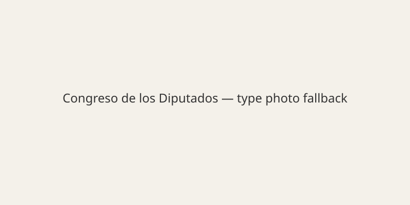

Madrid · Política · 13 de noviembre de 2026
La campaña electoral del 29N prosigue tras la huelga general por vivienda
ObjectiveNews. Objetivo T 100 · N 0 · C 100.

La campaña para las elecciones generales del 29 de noviembre continúa en España. La huelga general del 11 de noviembre, convocada por sindicatos y asociaciones de inquilinos por la crisis de vivienda y salarios, dejó detenciones e incidencias según datos del Ministerio del Interior. La Diputación Permanente del Congreso convalido la mayoría de los decretos de vivienda del Gobierno, incluida la prohibición de desahucios hasta 2031, pero rechazó otras medidas. El PSOE y el PP mantienen actos y declaraciones sobre integración, vivienda y el impacto de la huelga. Alberto Núñez Feijóo y Pedro Sánchez participan en la campaña. Las cifras de participación en la huelga son estimaciones de organizadores; los resultados de las urnas permanecen abiertos. La implementación de las medidas de vivienda depende en parte de las comunidades autónomas.

Artículos fuente y puntuaciones
| Medio | Titular | T | N | C |
|---|---|---|---|---|
| El País | Cobertura de elecciones y vivienda | 94 | -5 | 95 |
| laSexta | Última hora España | 93 | -5 | 90 |
Crédito de imagen: Wikimedia Commons File:Congreso_de_los_Diputados.jpg. SVG de respaldo comprometido.